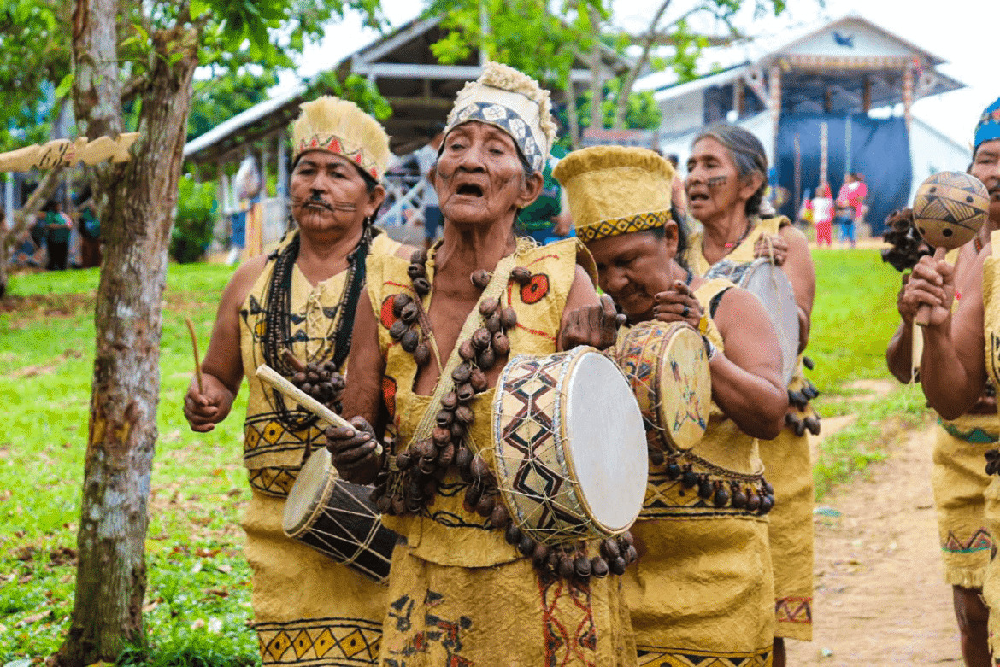
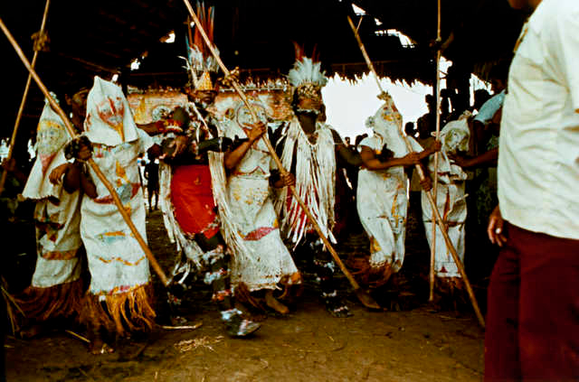
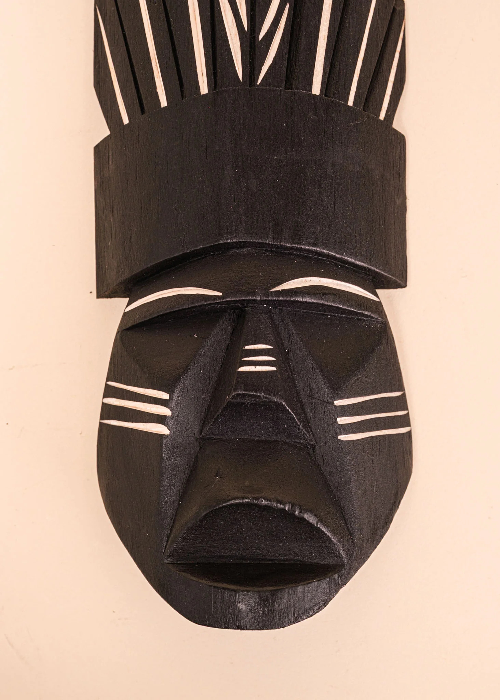

/i.s3.glbimg.com/v1/AUTH_59edd422c0c84a879bd37670ae4f538a/internal_photos/bs/2025/V/h/3JgmzBSIApWDg4yTstWg/povo-tikuna-michael-dantas2.jpg)
História
A origem do povo Ticuna está profundamente ligada à sua mitologia e tradição. Eles se autodenominam Maguta, que significa “Pessoas pescadas com vara”. Segundo os mitos, o herói cultural Yo’i criou os primeiros ticunas aos pés calos das águas do Igarapé Eware, um local sagrado na região do rio Solimões. Após essa criação, esses primeiros seres passaram a viver próximos à morada do yo’i, na montanha chamada Taiwane, também considerada sagrada
A origem para o povo ticuna não é apenas geográfica, mas também espiritual e simbólica, vinculada diretamente à natureza e aos heróis míticos. A partir do século XVII, eles começaram os primeiros contatos com não indígenas, no início o contato foi diretamente com os missionários europeus e, depois, com os colonizadores portugueses e espanhóis, dentro desse período, também tiveram conflitos com outros povos indígenas e passaram a deslocar dentro da região amazônica. Durante a colonização, especialmente durante o ciclo da borracha no século XIX, sofreram intensa exploração. Sendo sujeitados aos sistemas dos patrões, onde controlavam a suas terras e seu trabalho, provocando mudanças profundas em sua organização social.
Apesar disso, o povo manteve muitos aspectos de sua cultura, como sua língua, organização social baseada em clãs e forte tradição artística. A partir da década de 1980, os Ticuna passaram a se organizar politicamente para lutar por seus direitos, principalmente pela demarcação de suas terras. Esse processo resultou, nos anos 1990, onde teve o reconhecimento oficial de grande parte de seu território.
Hoje, os Ticuna enfrentam desafios relacionados à preservação de sua cultura, à sustentabilidade econômica e à relação com a sociedade envolvente, mas continuam sendo um povo que preserva uma rica identidade cultural e histórica

Danças e Cantos
As danças do povo Ticuna ocorrem em momentos especiais, como festas ou cerimônias, sendo parte de um conjunto maior que envolve rezas, cantos e arte visual. Elas são fundamentais para a cultura desse povo, estando ligadas aos rituais, às crenças espirituais e à vida coletiva. Vale destacar algumas das principais danças presentes nessa sociedade como:
Dança da formiga: É um elemento importante dentro do ritual da moça nova, marcando a passagem da menina para a vida adulta. Nessa dança, os participantes imitam os movimentos de uma formiga, o que possui um forte significado cultural. As formigas são símbolo de resistência, organização e força coletiva.
Dança dos mascarados: A dança dos mascarados, conhecida como To’ü, é caracterizada por pulos e giros, combinando elementos de medo e diversão, reforçando a conexão entre o mundo espiritual e a comunidade. Acredita-se que as máscaras “tocam” e “cantam” através dos participantes, criando uma atmosfera que suspende o tempo cotidiano e conecta a jovem às forças ancestrais.
Os cantos e as rezas Ticuna estão profundamente ancorados em sua cosmologia e em tempos míticos, quando seres humanos e seres da floresta compartilhavam uma linguagem comum. A prática musical é vista como um ato de resistência ancestral e afirmação da identidade Magüta. Muitos cantos narram os mitos de origem e as façanhas dos heróis culturais Yo’i e Ipi, funcionando como uma forma de preservar a história do grupo e suas regras de conduta. Na “pajelança”, a voz e o instrumento se fundem, o canto é uma ferramenta de diagnóstico e intervenção espiritual. Os cantos de cura, frequentemente acompanhados pelo som do maracá, servem para invocar espíritos, realizar limpezas energéticas e reorganizar as energias do paciente, afastando más energias.
Tradições e Xamanismo
Para o povo Ticuna, a doença não é apenas um problema físico individual, mas sim um evento coletivo que afeta os familiares e a comunidade, onde pode interromper atividades essenciais e refletir desequilíbrios sociais e espirituais. A saúde está ligada à harmonia coletiva e ao respeito a normas culturais, como regras alimentares, sexuais e cuidados em fases da vida.
As crenças sobre a doença estão associadas ao xamanismo, em que agentes externos, como feitiços, podem ser responsáveis pelo adoecimento. Os rituais têm papel central na prevenção e proteção, onde se destaca o ritual da “moça nova”, que marca a passagem para a vida adulta e busca afastar maus espíritos e fortalecer a comunidade. O pajé é uma figura fundamental nesse sistema, atuando como mediador entre o mundo físico e espiritual, diagnosticando e tratando doenças por meio de rituais, cantos e plantas medicinais. Assim, saúde e doença envolvem uma relação entre dimensões físicas, espirituais e sociais, baseada no respeito às tradições e saberes indígenas.


Arte e Expressão Visual
A arte dos Ticuna se destaca pela grande variedade de formas e materiais, incluindo máscaras cerimoniais, pinturas, esculturas, cestaria, cerâmica, tecelagem e adornos corporais. Ela não tem apenas função estética, mas também sendo usada para expressar crenças, mitos e a organização da sociedade. Um dos elementos mais importantes são as máscaras, utilizadas em rituais, que representam entidades sobrenaturais e possuem rica decoração. Além disso, a pintura corporal e os desenhos (chamados de matü) identificam o clã de cada pessoa e têm papel essencial nas cerimônias.
Outro aspecto importante é a divisão de tarefas: as mulheres produzem principalmente cestaria, tecelagem e cerâmica, enquanto os homens se dedicam a máscaras, esculturas e pinturas, especialmente as destinadas a rituais. Mesmo após séculos de contato com a sociedade externa, os Ticuna mantêm sua tradição artística, incorporando novas técnicas sem perder sua identidade cultural.

Danza cultural Ticuna - Renaciente Magüta Arara - Aniversario de San Sebastián de los Lagos.